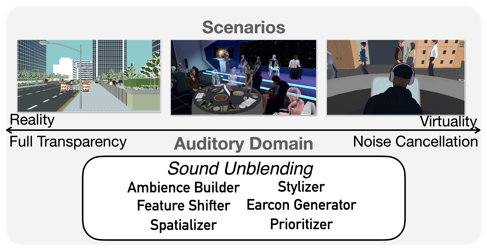
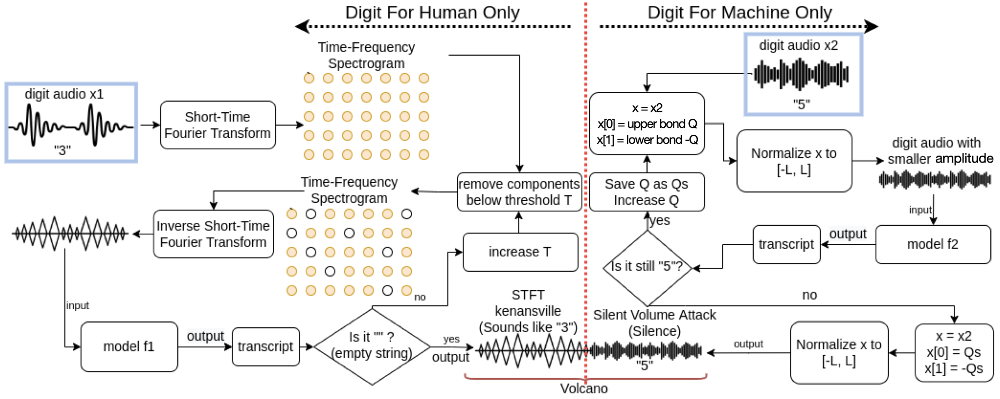
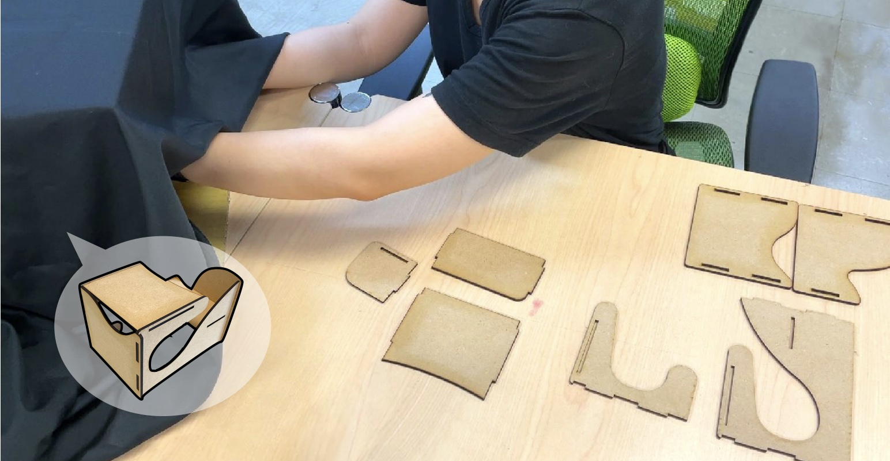
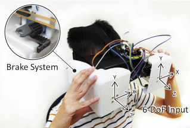

Publication
2024

Sound Unblending: Exploring Sound Manipulations for Accessible Mixed-Reality Awareness
Ruei-Che Chang, Chia-Sheng Hung, Bing-Yu Chen, Dhruv Jain, Anhong Guo
arXiv' 24 [Paper]

AdvCAPTCHA: Creating Usable and Secure Audio CAPTCHA with Adversarial Machine Learning
Hao-Ping Lee, Wei-Lun Kao, Hung-Jui Wang, Ruei-Che Chang, Yi-Hao Peng, Fu-Ying Cherng, Shang-Tse Chen
In Proceedings of USEC' 24 [Paper]
2023

2022
OmniScribe: Authoring Immersive Audio Description for 360° Videos
Ruei-Che Chang, Chao-Hsian Ting, Chia-Sheng Hung, Wan-Chen Lee, Liang-Jin Chen, Yu-Tzu Chao, Bing-Yu Chen, Anhong Guo
In Proceedings of UIST' 22 [Paper] [Full Video] [30s Preview] [Project page]

Puppeteer: Exploring Intuitive Hand Gestures and Upper-Body Postures for Manipulating Human Avatar Actions
Ching-Wen Hung, Ruei-Che Chang, Hong-Sheng Chen, Chung Han Liang, Liwei Chan, Bing-Yu Chen
In Proceedings of VRST' 22 [Paper] [Video] [30s Preview] [Talk]
2021


2020

TanGo: Exploring Expressive Tangible Interactions on Head-Mounted Displays
Ruei-Che Chang*, Chi-Huan Chiang*, Shuo-wen Hsu, Chih-Yun Yang, Da-Yuan Huang, Bing-Yu Chen (*co-primary)
In Proceedings of SUI' 20 [Paper]


2019

Posters, Demos, Works in Progress, and Extended Abstracts